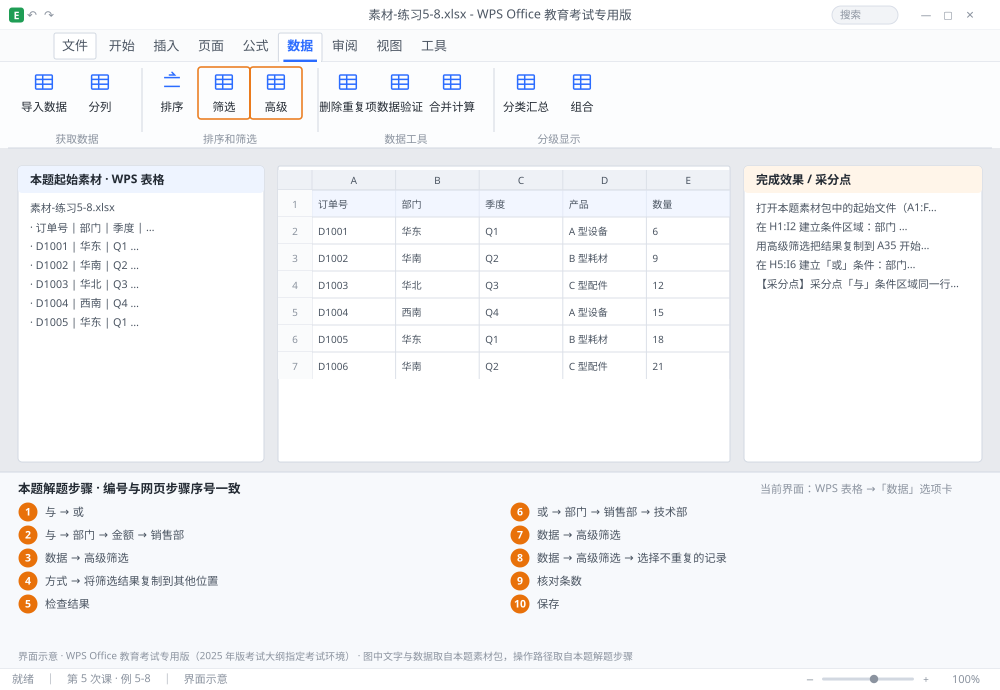

完成比对文档 · 例 5-8
高级筛选：条件区域的「与/或」+ 结果复制到指定位置 + 不重复记录 ｜ 第 5 次课 / WPS 表格 ｜ 网页：实操-表格2.html ｜ 考试环境：WPS Office 教育考试专用版（2025 年版考试大纲指定考试环境）
用途 本页按修订后的题目要求与解题步骤生成，是交卷自查的结果基准：
逐项列出每一步应出现的可复核结果，配合模拟操作截图与解题结果文件使用。
它不是素材包的一部分，不会预置答案动作；起始素材仍从本题素材包下载。
一、本题起始素材包
目录：练习素材/练习5-8-高级筛选/ ｜
下载包：练习素材/下载/练习5-8-高级筛选.zip
二、题目要求
- 打开本题素材包中的起始文件（A1:F21 销售明细）。
- 在 H1:I2 建立条件区域：部门 = 销售部 且 金额 > 5000（同一行）。
- 用高级筛选把结果复制到 A35 开始的区域。
- 在 H5:I6 建立「或」条件：部门 = 销售部 或 部门 = 技术部（不同行）。
- 用高级筛选筛选出这两类记录，结果复制到 H10。
- 用高级筛选的「选择不重复的记录」提取所有不同的部门（复制到 H30）。
- 保存为 学号-姓名-练习5-8.xlsx。
三、解题步骤（编号与下方核对表、截图编号一致）
- 理解条件区域规则。条件区域的第一行必须是与原表完全一致的字段名；同一行的多个条件是「与」，不同行是「或」。
- 建「与」条件。H1 输入「部门」、I1 输入「金额」；H2 输入「销售部」、I2 输入 >5000。字段名可以从原表直接复制，避免多空格。
- 启动高级筛选。点数据区任一单元格 →「数据」→「高级筛选」。
- 设三个区域。「方式」选「将筛选结果复制到其他位置」→ 列表区域 $A$1:$F$31 → 条件区域 $H$1:$I$2 → 复制到 $A$35 → 确定。
- 检查结果。A35 起应有表头 + 符合条件的记录，且每行金额都 > 5000、部门都是销售部。
- 建「或」条件。H5 输入「部门」；H6 输入「销售部」；H7 输入「技术部」（同一列、不同行）。注意此处不需要第二列字段名，只写一列即可表达「或」。
- 再筛选。「数据」→「高级筛选」→ 列表区域 $A$1:$F$31 → 条件区域 $H$5:$H$7 → 复制到 $H$10 → 确定。
- 不重复记录。「数据」→「高级筛选」→ 列表区域 $A$1:$F$31 → 不设条件区域 → 勾选「选择不重复的记录」→ 复制到 $H$30 → 确定。若只想提取部门列，可先单独选中 B 列再操作。
- 核对条数。用 COUNTA 数一下结果行数，与手工筛选的结果比对。
- 保存。Ctrl+S。
四、完成效果 / 采分点
采分点「与」条件区域同一行且字段名与原表一致 · 高级筛选结果复制到 A35 且记录全部符合 · 「或」条件在不同行 · 结果复制到 H10 · 不重复记录提取成功 · 三次筛选的列表区域均为绝对引用
五、逐项完成核对表
| 步骤 | 关键操作路径 | 应出现的结果（可复核） |
|---|
| 1 | 理解条件区域规则 | 「与」、「或」 |
| 2 | 建「与」条件 | 「与」、H1、「部门」、I1、「金额」 |
| 3 | 启动高级筛选 | 「数据」、「高级筛选」 |
| 4 | 设三个区域 | 「方式」、「将筛选结果复制到其他位置」 |
| 5 | 检查结果 | A35 |
| 6 | 建「或」条件 | 「或」、H5、「部门」、H6、「销售部」 |
| 7 | 再筛选 | 「数据」、「高级筛选」 |
| 8 | 不重复记录 | 「数据」、「高级筛选」、「选择不重复的记录」 |
| 9 | 核对条数 | 核对条数 |
| 10 | 保存 | 保存 |
六、模拟操作截图

界面示意 · WPS Office 教育考试专用版 · 橙色编号与本题解题步骤序号一致；
图中文字与数据取自本题素材包，功能入口取自本题解题步骤。
核对方法：按网页解题步骤完成并另存自己的成稿后，逐行比对本表第 3 列的
参数、公式、区域、文件名与对象数量；再对照网页「完成效果 / 采分点」检查版式是否一致。